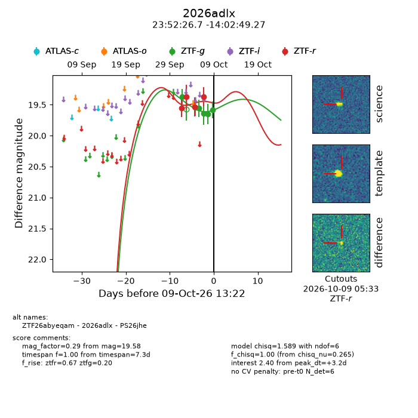
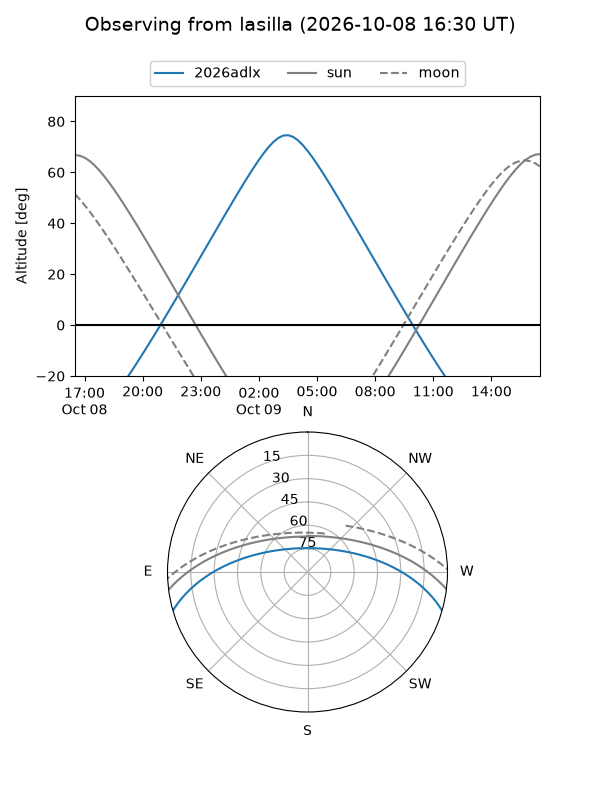
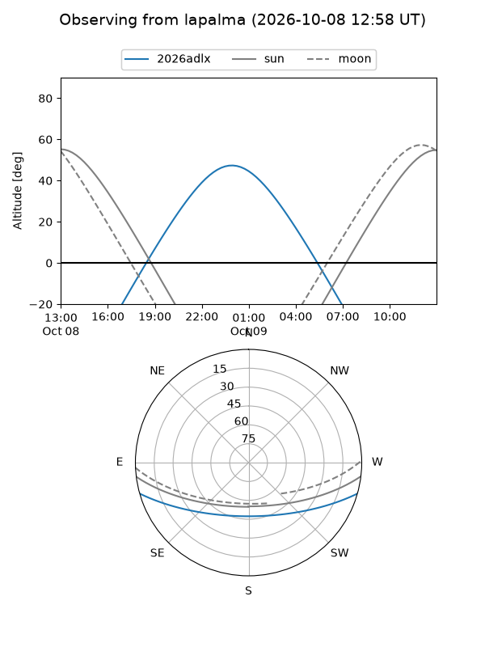
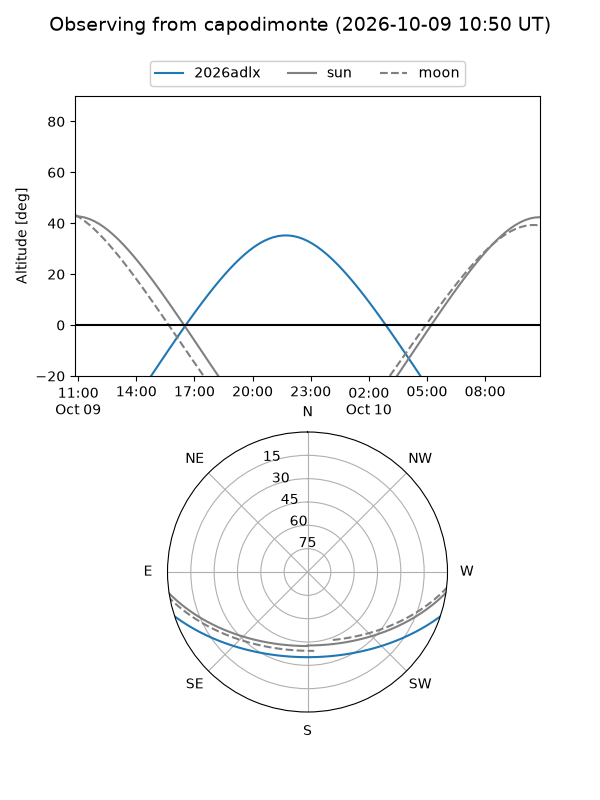
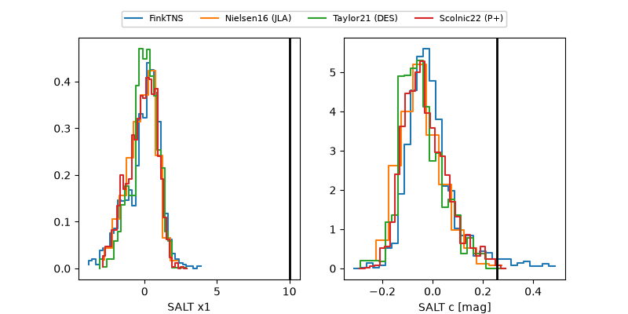

2026adlx
Target 2026adlx at 2026-10-09 13:25
Aliases and brokers:
FINK-ZTF: ztf.fink-portal.org/ZTF26abyeqam
Lasair-ZTF: lasair-ztf.lsst.ac.uk/objects/ZTF26abyeqam
ALeRCE-ZTF: alerce.online/object/ZTF26abyeqam
YSE-PZ: ziggy.ucolick.org/yse/transient_detail/2026adlx
TNS name: wis-tns.org/object/2026adlx
Direct TNS query: direct search
alt names
ZTF26abyeqam (ztf,fink_ztf)
2026adlx (tns,yse)
PS26jhe (panstarrs)
Coordinates:
equatorial (ra, dec) = 358.1110,-14.04702
equatorial (HMS+DMS) = 23:52:26.65,-14:02:49.27
galactic (l, b) = (73.5433,-71.01513)
Flags:
peak dt: +3.2
Photometry:
last ztfg=19.58, ztfr=19.37
6 ztfg, 4 ztfr detections
Lightcurve

Visibility



Additional plots
